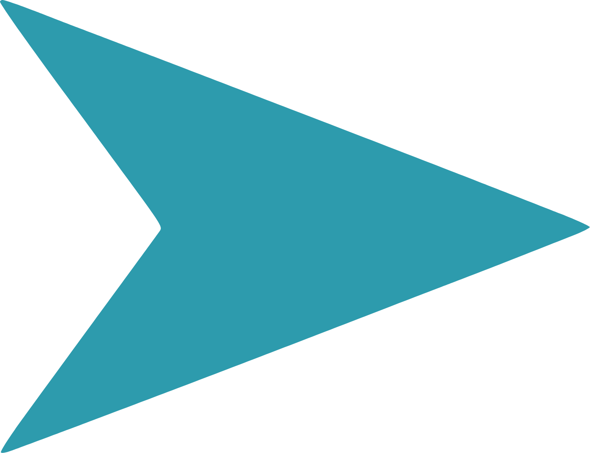
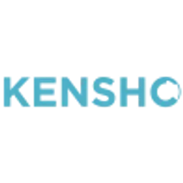
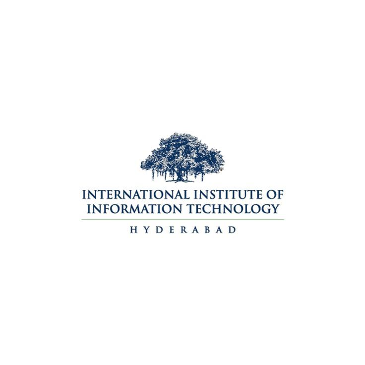
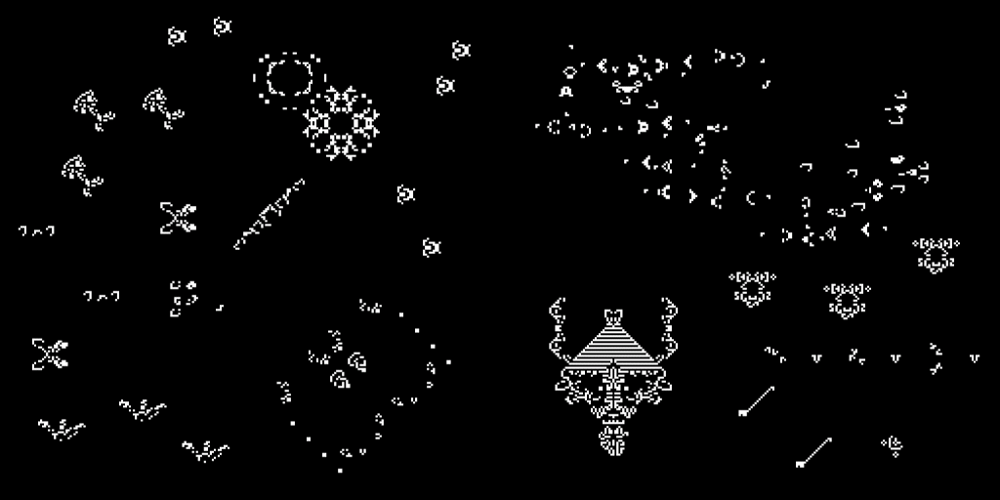

|
Ansh Khandelwal I am a Masters in Artificial Intelligence and Innovation (MSAII) student in the Language Technologies Institute at Carnegie Mellon University. I completed my undergraduate education (with Honors) in Electronics and Communication from International Institute of Information Technology, Hyderabad in 2023. My interests lie at the intersection of NLP, LLM Agents, Recommendation Sytems, and Multimodal ML, with a focus on taking models from research to production. At CMU, I’m currently collaborating with Cohere as a Research Assistant, working on LLM agents and error recovery strategies with Prof Graham Neubig. I’m also working on prompt optimization with BNY. During my undergrad, I conducted research at the Smart City Research Center developing a patented smart water meter technology. I also work with Prof. Ponnurangam Kumaraguru at Precog Lab, on synthetic data generation using GANs for Infosys. Beyond AI, I love to travel and explore new places. I’m always excited to discuss MLE roles for full-time opportunities starting Summer 2025—feel free to reach out! |
Email: anshk@cs.cmu.edu |

CMU |

BNY |

Kensho |

IIIT Hyderabad |
- [Feb 2025] Applied for a patent on Quantitative Information Extraction from Figures in Documents with Kensho.
- [Jan 2025] Started working as a Research Assistant on AI agent error recovery with Prof. Graham Neubig in collaboration with Cohere.
- [Sept 2024] Began a capstone project on prompt optimization at BNY AI Hub.
- [May 2024] Started a Machine Learning Internship at Kensho Technologies, Cambridge, MA.
- [Aug 2023] Began my Master’s in Artificial Intelligence (MSAII) at Carnegie Mellon University.
- [Jan 2023] Received admission to the MSAII program at Carnegie Mellon University.
- [May 2023] Awarded the Undergraduate Research Award at IIIT Hyderabad.
- [July 2022] Started a Machine Learning Internship at Siemens, India.
- [May 2022] Began a Software Engineering Internship in the Visual Intelligence team at Samsung R&D, India.
- [May 2022] Won the Smart Water Challenge held by the Government of Telangana and NIUM. Read more.
- [Apr 2022] Applied for a patent on Smart Water Meter Technology with IIIT Hyderabad.
- [Mar 2022] Paper Improving IoT-based Smart Retrofit Model accepted at IEEE FiCloud 2022.
- [Mar 2021] Paper Making Analog Water Meters Smart accepted at IEEE FiCloud 2021.
- [Jul 2019] Started my Bachelor's in Electronics & Communication at IIIT Hyderabad.
Work Experience
|
Language Technologies Institute, CMU |
Course projects
|  |
End-To-End Large NLP System Building with RAG Designed an NLP system for QA with advanced retrieval-augmented generation (RAG), creating a baseline model using FlanT5 with LangChain and a FAISS database, resulting in an 8s inference speed on a local device. Built a Chroma database with HuggingFace UAE-Large embeddings for document retrieval and utilized a quantized Llama-2-7b model with Ollama, improving ROUGE scores by 60% over baseline. report |
|
Enhancing Numerical Reasoning of LLMs Upgraded Llama2-7b performance on GSM8K dataset with a novel number encoding scheme, retrieval augmented few-shot prompting, and Chain-of-Thought, enhancing baseline accuracy by 3.5%. Fine-tuned Llama2-7b leveraging AWS SageMaker Studio, incorporated a self-consistency step to estimate answer confidence. report |
|
|
MLOps for Movie Recommendation System A scalable movie recommendation system serving 1M+ pseudo users in a fully simulated environment, complete with load balancing, auto scaling, system and model monitoring, and evaluation. Top in class for highest average user ratings of recommended movies. Containerized with Docker to ensure scalability and 99% uptime through load balancing and automated retraining with Jenkins. Utilized MLflow for model versioning and set up real-time monitoring and metrics tracking with Prometheus and Grafana. report |
|
|
Enabling LLMs as Intelligent Agents Used Llama 2 to build a general purpose agent for various tasks from OS to Knowledge Graph environments. Instruction tuning combineed with tree-of-thought sampling on a mixture of environment interaction trajectories and ShareGPT text. report |
|
|
Multimodal Interaction in Memes Analyzing vision-language interactions in memes and improving multimodal model performances on sentiment classification, caption generation and question-answering. Created a meme caption generation pipeline by fine-tuning InstructBLIP, MiniGPT4, and Facebook MMBT as baselines. report |
|
Last updated Feb 2025. Thanks Jon Barron for the template!
|